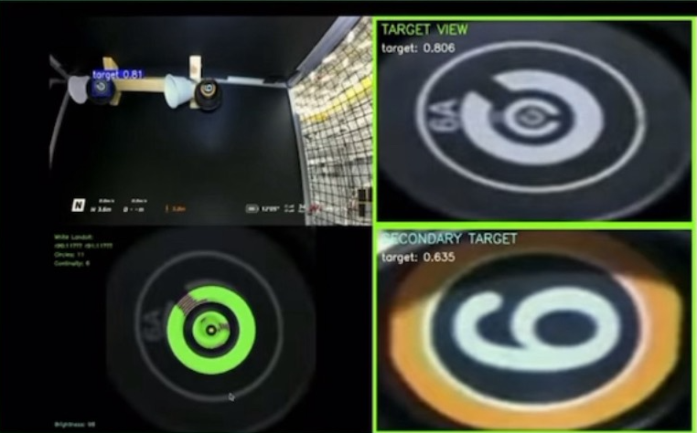

数字 & ランドルト認識
トップ
ランドルト環認識
モーション検出
危険物ラベル認識
QRコード認識
UI構成
左上
: YOLO によるリアルタイム認識
右上
: 認識画像のノイズ除去・拡大表示
右下
: 二物体同時認識の拡大表示
左下
: 認識した情報の文字表示
ギャラリー（クリックで拡大）

認識ラベル: 7（信頼度 0.92）
認識ラベル: 3（信頼度 0.88）
ランドルト環: 右開き（信頼度 0.90）